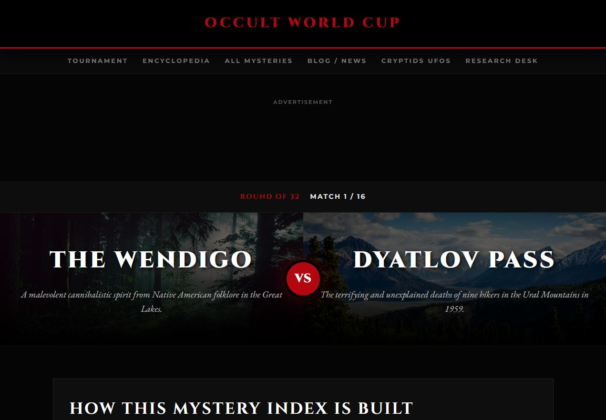
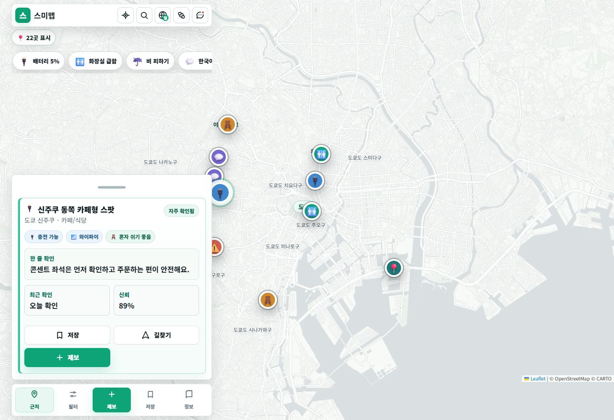

작은 웹 실험에서 시작해 운영형 사이트 포트폴리오로 확장했습니다.
J MEDIA WORLD!
단단한 구조, 강한 첫인상.
첫 화면, 포트폴리오, 문의 흐름을 하나의 장면처럼 설계합니다.
9 Owned Labs
Brand Website
Content / Tool / Map
SCROLL
01 · ABOUT
클릭하고 싶은 브랜드 장면.
첫 화면은 기억되고, 포트폴리오는 증명되며, 문의 버튼은 자연스럽게 눌려야 합니다.
J MEDIA는 감각, 실제 화면, 운영 흐름을 함께 정리합니다.
정보형, 도구형, 지도형, 참여형 사이트를 직접 만들고 운영합니다.
랜딩형은 빠르게, 브랜딩형은 이미지와 인터랙션까지 잡아 제작합니다.
CREATIVE STRUCTURE
Design that proves the work
큰 타이포, 겹치는 이미지, 명확한 CTA로 방문자가 작업물을 먼저 느끼게 합니다.
BRAND SCENE
Playful first view
딱딱한 소개보다 브랜드의 분위기를 먼저 보여주는 장면을 만듭니다.
TRUST FLOW
Proof to contact
운영 경험, 제작 방식, 공식 연락처를 한 흐름으로 이어줍니다.
02 · HIGHLIGHTS
Works.
대표 작업만 먼저 보여주고, 전체 목록은 Works 페이지에서 봅니다.
FEATURED WORK
전체 작품은 별도 페이지로 분리했습니다.

INFO HUB
Policyfundpedia
공식 공고형 정보를 읽기 쉬운 탐색 구조로 재배치한 대표 정보형 프로젝트. Open case study
UPLOAD TOOL
Reportools
파일 제출 전 확인 흐름을 도구형 웹서비스로 설계한 작업. Open case studyMAP UX
Tripmarking
지도와 위험 정보를 모바일에서 바로 이해하게 만든 로컬 데이터 프로젝트. Open case study
QUICK TOOL
Goatool
문서, 파일, 제출 전 점검을 빠르게 처리하는 실무형 도구 사이트. Open case study
ARCHIVE
Ahachive
콘텐츠 아카이브를 탐색 가능한 편집형 웹사이트로 구성한 작업. Open case study
PLAY LOOP
Occult Worldcup
선택, 비교, 공유로 이어지는 참여형 페이지의 체류 흐름 실험. Open case study
LOCAL DATA
Sumimap
일본 생활 정보를 지도, 제보, 모바일 바텀시트 중심으로 설계한 프로젝트. Open case study
SAFETY GUIDE
Scamreader
불안한 링크와 메시지를 사용자가 스스로 점검하도록 돕는 안내형 도구. Open case study03 · CHOOSE PAGE
필요한 내용만 따로 보세요.
03 · STYLE STUDY NOTE
감각을 구조로 다시 설계합니다.
레퍼런스의 흐름과 타이포 리듬만 읽고, J MEDIA의 화면 언어로 다시 만듭니다.
원본 문구, 이미지, 로고, 고유 브랜드 자산을 직접 사용하지 않습니다.
원본의 감성은 참고하되 포트폴리오, 문의, 운영 신뢰 흐름은 J MEDIA식으로 다시 설계합니다.
고객에게는 “비슷하게 만들 수 있음”보다 “내 업종에 맞게 바꿀 수 있음”을 보여줍니다.
04 · FLAGSHIP REDESIGN
CREATIVE AGENCY REDESIGN
J MEDIA 자체가 포트폴리오입니다.
큰 타이포, 실제 화면, 움직이는 쇼케이스를 자체 제작 상품에 맞게 다시 설계했습니다.
05 · CHOOSE YOUR ENTRY
업종별 진입을 빠르게 만듭니다.
고객이 이해하는 이름으로 먼저 안내합니다.
06 · INDUSTRY TEMPLATES
Customer type first.
업종별 기본 골격을 먼저 잡아 첫 화면과 문의 흐름을 빠르게 정합니다.
위치, 가격, 예약 버튼, 후기 영역을 먼저 배치하는 소상공인형 구조.
대표 이미지와 포트폴리오를 전면에 세우는 브랜드 소개형 구조.
하나의 상품, 이벤트, 캠페인을 빠르게 이해시키는 전환형 구조.
검색, 입력, 결과 화면이 필요한 정보형 서비스 구조.
06 · WEB PRODUCTION METHOD
브랜드형과 기능형은 다르게 움직입니다.
Brand scene first. Customer action next.
첫 화면, 큰 타이포, 이미지 갤러리, 포트폴리오 무드로 브랜드를 기억시킵니다.
제품, 이벤트, 서비스의 한 장면을 강한 CTA와 스크롤 연출로 연결합니다.
입력, 처리, 결과 화면을 빠르고 명확하게 설계해 재방문 이유를 만듭니다.
지도, 목록, 제보, 상세 정보를 모바일에서 바로 움직일 수 있게 만듭니다.
BEFORE
예쁜 첫 화면 + 흩어진 설명
방문자는 무엇을 봐야 할지, 어디서 문의해야 할지 늦게 이해합니다.
AFTER
첫인상 → 대표작 → 신뢰 → 문의
감성 장면과 구매 판단 정보를 분리해 더 빠르게 설득합니다.
07 · SERVICE PACKAGES
범위와 기간을 먼저 보여줍니다.
정확한 견적 전, 상담 기준이 되는 제작 범위입니다.
08 · FAST WORKFLOW
빠르게 만들되, 가볍게 보이지 않게.
원본 자산을 복제하지 않고 구조, 리듬, 인터랙션 의도를 분석합니다.
반응형 화면, 기본 SEO 파일, 문의 흐름, 배포 구조를 함께 만듭니다.
소스코드, 배포 방식, 연결 방향, 수정 범위를 정리합니다.
09 · STRUCTURE FLOW
구조는 화면에서 보여야 합니다.
대표작, 신뢰 정보, 문의 흐름을 작은 지도처럼 설계합니다.
한 페이지 안에서도 고객이 판단하는 순서를 먼저 잡습니다.
예쁜 장면과 구매 판단 정보를 분리해 문의 장벽을 낮춥니다.
버튼은 많게 두지 않고, 다음 행동이 자연스럽게 이어지게 둡니다.
10 · PRODUCTION PROCESS
업종, 참고 사이트, 필요한 기능을 확인합니다.
첫 화면, 섹션 순서, 문의 흐름을 먼저 정합니다.
브랜드 톤과 모바일 화면을 우선 확인합니다.
오픈 후 한 달 동안 문구와 구성 밀도를 무한 수정합니다.
배포, 연결, 전달 방식을 안내합니다.
11 · J MEDIA WORLD
J MEDIA 작업 세계.
정보형, 도구형, 지도형, 전환형 작업을 하나의 월드로 묶었습니다.
AhachiveMegapureunassetPolicyfundpediaSumimapScamreaderTripmarkingGoatoolReportoolsJ MEDIA
12 · J MEDIA LABS
내부 프로젝트로 증명합니다.
직접 만든 자체 운영 프로젝트입니다. Sample Works / Internal Labs로 구분합니다.
정보형, 도구형, 지도형, 참여형 프로젝트를 직접 운영하며 구조를 검증합니다.
작은 랜딩부터 브랜딩형 포트폴리오까지 목적에 맞춰 빠르게 제작합니다.
운영 방식, 전달 범위, 수정 기준을 한 번에 정리합니다.
Ahachive
Megapureunasset
Policyfundpedia
Sumimap
Scamreader
Tripmarking
Goatool
Reportools
Ahachive
Megapureunasset
Policyfundpedia
Sumimap
Scamreader
Tripmarking
Goatool
Reportools
13 · TRUST & DELIVERY
문의 전 확인할 핵심 정보.
이메일: weblaunch.j@gmail.com · 문의 폼: contact.html
반응형 페이지, 포트폴리오 섹션, 문의 흐름, 기본 SEO 파일, 소스코드 전달.
상담, 제작, 배포, 수정 흐름을 단계별로 안내합니다.
레퍼런스 사이트의 코드, 이미지, 문구를 복제하지 않고 구조와 인터랙션 감각만 재해석합니다.
도메인이 없어도 시작할 수 있고, 보유 도메인은 배포 후 연결 방향을 안내합니다.
오픈 후 30일 동안 문구와 구성 밀도를 제한 없이 조정합니다.
14 · FAQ
문의 전 막히는 지점부터 풉니다.
가능합니다. 다만 로고, 사진, 서비스 설명이 적을수록 첫 상담에서 방향 정리가 더 중요합니다.
가능합니다. 먼저 임시 배포 주소로 확인하고, 이후 보유 도메인 또는 신규 도메인 연결을 안내합니다.
필요한 화면, 문구, 연결 방식만 먼저 정리해 제작 범위를 잡습니다.
오픈 후 한 달 동안 문구와 구성 밀도를 무한 수정합니다. 큰 신규 기능은 별도 협의합니다.
정적 웹사이트 기준으로 제공 가능합니다. 운영 방식과 수정 범위는 상담 때 함께 정리합니다.
고유 자산을 복제하지 않고, 레이아웃 감각과 인터랙션 흐름을 업종에 맞게 재해석합니다.
15 · CONTACT
첫 화면과 문의 흐름을 같이 잡습니다.
참고 사이트, 업종, 필요한 기능을 알려주시면 어떤 구조로 시작할지 먼저 정리합니다.
1분 상담
견적 방향 안내
배포 방향 안내
운영 방식 정리